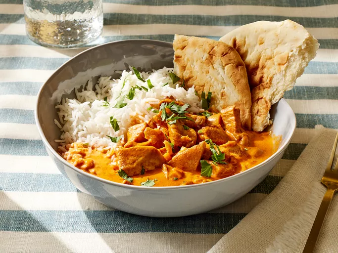

Butter Chicken

Description
One of the most common Indian dishes that is sure to be a crowd pleaser, Butter Chicken is usually a go-to when talking someone into trying Indian food for the first time.
Its rich sauce made with tandoori and garam marsala can be made to your spice tolerance, and is usually served with rice and/or a flatbread, typically naan.
Ingredients
- 1 tablespoon minced garlic
- 1 (15 ounce) can tomato sauce
- 3 cups heavy cream
- 2 teaspoons salt
- 1 teaspoon cayenne pepper
- 1 teaspoon garam masala
- 1 ½ pounds skinless, boneless chicken breast, cut into bite-sized chunks
- 2 tablespoons vegetable oil
- 2 tablespoons tandoori masala
Steps
- Gather all ingredients. Preheat the oven to 375°F (190°C).
- Melt 2 tablespoons butter in a skillet over medium heat. Stir in onion and garlic,
and cook slowly until the onion caramelizes to a dark brown, about 15 minutes.
- Meanwhile, combine cream, tomato sauce, remaining butter, salt, cayenne pepper, and garam masala in a saucepan over medium-high heat;
bring to a simmer.
- Reduce heat to medium-low, cover, and simmer, stirring occasionally, for 30 minutes. Stir in caramelized onions.
- While the sauce is simmering, toss chicken with vegetable oil until coated. Season with tandoori masala and spread out onto a baking sheet.
- Bake chicken in the preheated oven until no longer pink in the center, about 12 minutes.
- Add cooked chicken to the sauce and simmer for 5 minutes before serving.